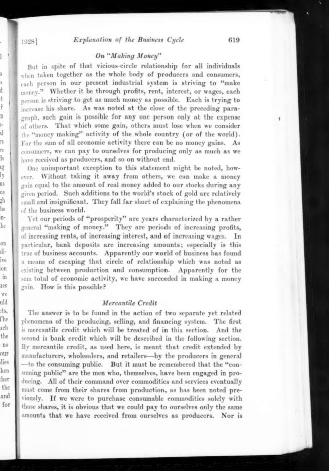

Shafer, 1928: o crédito como origem do ciclo econômico
Leitura: 9 min
Num estudo dedutivo, Shafer sustenta que a prosperidade é o ganho aparente criado pela expansão do crédito mercantil e bancário, e a depressão, a liquidação desse mesmo crédito.


Nos anos de prosperidade, observa Joseph E. Shafer, do Detroit Institute of Technology, quase todo mundo parece ganhar dinheiro ao mesmo tempo. Sobem os lucros, as rendas, os juros e os salários; crescem os depósitos bancários, sobretudo as contas das empresas. O fato intriga o autor, porque, pelo raciocínio que ele expõe no artigo de abertura do número de dezembro de 1928 da American Economic Review, a economia tomada em conjunto não poderia ganhar dinheiro de si mesma. A pergunta “como isso é possível?” organiza todo o texto.
Shafer avisa que não vai provar nada com estatísticas. O estudo é dedutivo; se for promissor, deve servir de ponto de partida para a investigação indutiva, e o autor acredita que pode ser testado no mundo dos fatos. Também não diz ter descoberto forças desconhecidas: combina observações antigas numa sequência nova, preenche lacunas e, como as pesquisas mais recentes, procura mostrar que o ciclo se gera dentro do sistema econômico.
De que circuito Shafer parte?
A economia formal, diz o autor, costuma tratar produção e consumo como conceitos quase separados. Para ele, os dois estão presos um ao outro. Produz-se porque há, ou se espera que haja, demanda; e a demanda vem de pessoas. Seguida até o fim, a pergunta sobre quem demanda mostra que os consumidores de um país, ou do mundo, são em grande parte os mesmos que produzem ou que possuem a terra e o capital. Toda renda sai da produção.
Daí um círculo contínuo: o poder de comprar depende das parcelas recebidas na produção, e essas parcelas dependem do que se pagou como consumidor pelos bens produzidos. Se parte do poder de compra for retida, na volta seguinte só se poderá pagar pelo produto menos do que se recebeu. Um indivíduo pode ganhar à custa de outros, mas não o conjunto. A única exceção que o autor admite é o ouro novo acrescentado ao estoque, pequeno demais para explicar os fenômenos dos negócios.
“Não há escapatória; nem há folga.” (There is no escape; nor is there any slack.)
Como o crédito mercantil cria lucros aparentes?
A primeira resposta é o crédito mercantil, aquele que fabricantes, atacadistas e varejistas concedem ao público consumidor. Shafer imagina dois casos. No primeiro, os produtores elevam os preços acima do que as rendas permitem pagar e financiam a diferença a prazo. No segundo, retêm parte do que recebem, mas mantêm os preços dando crédito no valor do déficit. Nos dois, registram nos livros um ganho em dinheiro, e a soma da atividade econômica parece “fazer dinheiro”.
O autor acrescenta que essa expansão não atrapalha a volta seguinte do circuito. Se os custos ficarem estáveis, os empresários recebem de volta, em dinheiro, o equivalente aos custos do período anterior e podem continuar produzindo. O crédito apenas forneceu o poder de compra que cobre a margem do lucro aparente.
O que o crédito bancário acrescenta?
Isso ainda não basta para explicar a prosperidade, e o sistema financeiro teria inventado um segundo meio. O crédito bancário nasce do que o autor chama de ficção curiosa do sistema de cheques. Imagine-se uma comunidade isolada com um só banco: um cheque de um depositante a outro transfere crédito de uma conta para outra, e o dinheiro fica no cofre. Quem saca entrega o dinheiro a comerciantes que o devolvem ao banco. A reserva fica praticamente parada, o que sugere emprestá-la; e mesmo o tomador costuma receber o empréstimo como depósito. Por isso o sistema pode criar crédito em quantidade quase ilimitada.
O poder de compra bancário chega aos consumidores por dois caminhos. Os comerciantes o usam como base para conceder mais crédito ao público, e boa parte do crédito dos vendedores se apoia em empréstimos bancários. Ou ele flui como parcelas maiores pagas pela produção e como remuneração da construção de novas fábricas e equipamentos. O processo é cumulativo: com os preços em alta, outros compradores recorrem ao crédito para manter o padrão de vida, o que eleva ainda mais os preços.
Por que vem a depressão?
O autor faz três observações. A primeira é que crédito é poder de compra, mas não poder de pagamento: o comerciante que vende a prazo registra uma venda e um lucro, mas ainda tem de cobrar; se o crédito for bancário, o credor passa a ser o banco, e a mercadoria continua sem pagamento. A segunda é que o conjunto só continua a ganhar enquanto o crédito cresce mais depressa que os custos. A terceira é que há um limite. Para o crédito bancário, a lei o fixava com precisão; o Federal Reserve o tornou menos absoluto, mas ele ainda existe. E sempre haveria forças naturais que tornam cada dose adicional de crédito menos valiosa, como mostrariam os países europeus que expandiram o poder de compra depois da guerra.
“O crédito não é poder de pagamento.” (Credit is not paying power.)
Quando o limite é atingido, provavelmente primeiro pelo crédito bancário, o crédito mercantil se contrai quase de imediato. Os empréstimos deixam de ser renovados e passam a ser chamados. O público tem agora de tirar de suas parcelas da produção o valor das dívidas que liquida e, com o restante, comprar toda a produção corrente. Se pagar as dívidas, comprará a produção abaixo do custo; se comprar a produção pelo custo, nunca pagará as dívidas. Em qualquer caso, o conjunto perde o equivalente ao crédito expandido. Os preços caem, os ganhos em dinheiro ficam negativos e a indústria praticamente para.
“Não podemos nos erguer puxando as próprias botas.” (cannot lift ourselves by our boot straps.)
A contração, como a expansão, é cumulativa: cada liquidação provoca nova “perda” e nova liquidação. Como não há poder de pagamento para todos, alguns perdem e outros conseguem cobrar à custa deles; os mais eficientes na cobrança são os vencedores. Shafer também responde a quem nega que o crédito bancário cause o ciclo porque não o inicia. Para ele, o crédito mercantil é causa na mesma medida, e a própria depressão derruba os negócios abaixo do normal, de modo que a recuperação viria mesmo sem crédito. O crédito responderia pela inflação acima desse nível e, indiretamente, pela queda.
O que a equação de troca mostra sobre o ciclo?
O autor usa a equação de troca anual de Fisher, MV + M’V’ = PT, em que M é o dinheiro em circulação, V sua velocidade, M’ o crédito, V’ sua rotação, P o nível médio de preços e T o volume de trocas. Não pretende criticá-la. Observa apenas que o termo do crédito é positivo quando o crédito se expande e negativo quando se contrai. Como a liquidação deve igualar a expansão, sobre o ciclo inteiro os dois se anulariam.
Daí as conclusões sobre moeda e crédito. O dinheiro, no fim, só funciona como meio de troca, e a economia monetária difere do escambo apenas porque padroniza um dos lados da troca. O crédito não seria um bem, como alguns economistas sustentaram ao confundir o sistema de compensação de cheques com o de crédito; a compensação funcionaria mesmo sem nenhuma expansão do crédito. No curto prazo, o crédito é um determinante dos preços e dos lucros de papel; no ciclo completo, deixa de ser.
“O crédito não é nem bem, nem preço, nem lucro; é inflação.” (credit is neither goods, nor price, nor profit; it is inflation.)
Qual seria o remédio?
Shafer declara que não propõe um remédio completo. Diz, porém, que é evidente que eliminar a expansão do crédito mercantil e bancário aboliria o ciclo, e que estabilizá-lo poderia ser igualmente eficaz, porque o ciclo nasce da expansão e da contração. Nesse sentido, o Federal Reserve teria melhorado o problema em parte, ao manter o crédito bancário dentro de limites estreitos. Isso não bastaria, pois o crédito mercantil sozinho seria capaz de produzir prosperidade aparente e depressão. A conclusão do autor é que, para acabar com o ciclo, seria preciso eliminar o crédito em todas as suas formas.
Ele antecipa a objeção de que isso eliminaria o incentivo de “fazer dinheiro”. A resposta é que desapareceriam os grandes lucros de papel, mas o ganho real seria o mesmo de antes, depois do acerto da depressão: o bom e o ruim viriam juntos, sem se acumular.
Na minha leitura
Na minha leitura, o artigo pertence à família das teorias monetárias e creditícias do ciclo que dominavam o debate dos anos 1920, e se distingue por pôr o crédito comercial entre empresas e consumidores no mesmo plano do crédito bancário. O argumento é inteiramente contábil: parte de um circuito fechado entre renda e gasto e trata qualquer diferença entre os dois como crédito que terá de ser liquidado.
É também um documento de época. O texto saiu em dezembro de 1928, com o crédito americano em plena expansão, e descreve a crise como o momento em que os empréstimos são chamados e o público precisa pagar dívidas com a renda corrente. A conclusão de que só a eliminação do crédito acabaria com o ciclo mostra até onde o autor leva a própria dedução.
Glossário
- Crédito mercantil
- crédito concedido por fabricantes, atacadistas e varejistas aos compradores, como na venda a prazo.
- Crédito bancário
- empréstimos que os bancos concedem em forma de depósitos, sem retirar dinheiro das reservas, graças ao sistema de cheques.
- Equação de troca
- identidade MV + M’V’ = PT, que relaciona moeda e crédito, suas velocidades, o nível de preços e o volume de trocas.
- Liquidação
- pagamento ou cancelamento das dívidas acumuladas; para Shafer, a essência da depressão.
- Federal Reserve
- sistema de bancos centrais dos Estados Unidos, criado em 1913.
Fontes
- An Explanation of the Business Cycle — Joseph E. Shafer (Detroit Institute of Technology) (pp. 617–628). Internet Archive (número completo, PDF)
- Edição completa, com os demais artigos: Nº 210 do Arquivo.
Documento em domínio público (EUA, publicado antes de 1931), via JSTOR Early Journal Content e Internet Archive. Resumo e comentário do autor deste site, sem afiliação com a American Economic Association. Encontrou um erro? Escreva: a correção é publicada no próprio texto, com data.
↑ Nº 210 · Shafer e o crédito no ciclo, Heaton e a moeda de cartas do Canadá francês, Edwards e o controle dos empréstimos externos Cummins, 1928: o ensino de economia nas pequenas faculdades americanas →